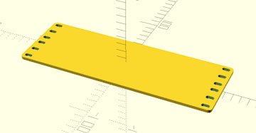
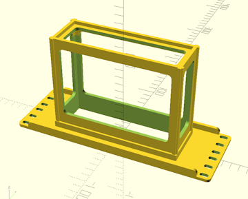
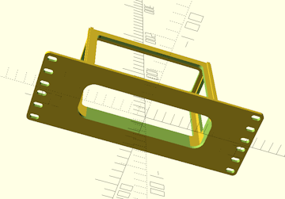
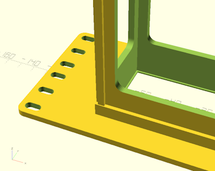
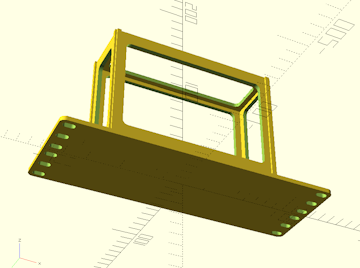
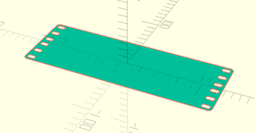
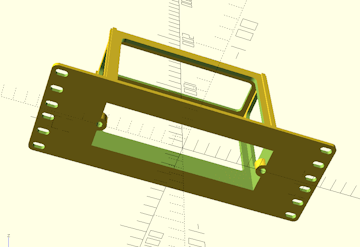
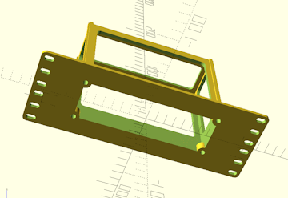
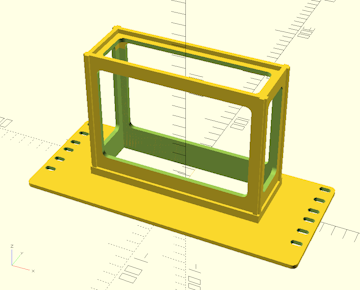
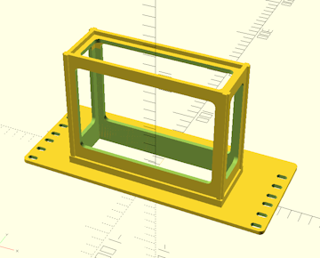

Home
Home

Configuration Options :: Faceplate Options
Everything in a rack hangs off a faceplate.
faceplate only
CageMaker PRCG can generate faceplates without a cage to hold a device, which is helpful for creating "blanks" or customized cageless faceplates to hold things like cooling fans or connectors. Since CageMaker PRCG normally determines heights automatically based on the size of the device, this setting instructs CageMaker PRCG to generate a faceplate without a cage and manually sets the height to the given number of units.

When using this option along with faceplate modifications, keep in mind that the left and right side faceplate modifications CageMaker PRCG generates are not horizontally centered on the faceplate. Instead, use the centered mod type option to center a modification on the faceplate.

Creating a cageless faceplate will naturally disable all cage-centric options.

reinforce faceplate
This setting enables the addition of right-angle reinforcing ribs along the top and bottom of the back side of the faceplate, above and below the cage. This stiffens the faceplate against rotational forces from the cantilevering effect of suspending a weight out from a flat plane. When the cage is a partial width, the ribs will extend from the folded ears to form a box-like structure.
While CageMaker PRCG does automatically position the reinforcing ribs to clear rack rails and avoid hardware on bolt-together ears on partial-width cages, there may be interference issues that require some modifications such as trimming for fastener clearance.

faceplate rounded corners
Since some devices have rounded corners, this option instructs CageMaker PRCG to round the corners of the faceplate opening. The ventilation opening in the bottom of the cage is also reduced in size so that the bottom edges of the device will be supported.

Use a radius gauge to determine the proper setting for this option, as an incorrect setting could produce an initially unusable cage that requires modification.
This only affects the faceplate - it does not round the inside corners of the cage proper. It may be necessary to enable the extra support option and/or set the cage bottom geometry option to solid to more fully support the device depending on how it is shaped.

add retention lip
When this setting is enabled, CageMaker PRCG will generate a 1mm "lip" around the perimeter of the faceplate to act as a retainer for the device in the cage. This should produce a tight friction fit during insertion, and help hold the device in the cage. To compensate for this, the cage will be generated 1mm deeper and the device recessed into the cage accordingly.

closed faceplate new for version 0.7 :: In cases where it might be necessary or desirable to have a cage that is not open at the front, such as an enclosure for an electronic project whose internals are accessed through an open cage top, this option allows for disabling generating a device cutout through the faceplate.
new for version 0.7 :: In cases where it might be necessary or desirable to have a cage that is not open at the front, such as an enclosure for an electronic project whose internals are accessed through an open cage top, this option allows for disabling generating a device cutout through the faceplate.

Enabling this option also enables using a centered faceplate modification with a cage, but also disables overlap checking of faceplate modifications with the cage proper. Care must be taken to avoid positioning faceplate modifications where they will cut into the sides of the cage.

reduce faceplate to 2d
Reduces a cageless faceplate to a 2D object for export. (OpenSCAD can export 2D objects to SVG, DXF, PDF, and CSG.) Ideal for creating a 2D pattern for engraving or laser-cutting.
This option can only be enabled when the faceplate only option is set to generate a cageless faceplate. After rendering a completed faceplate with this option enabled, use "File" menu > "Export" in OpenSCAD to export the resulting faceplate to a 2D-file format.

narrow edge centered holes
Some subrack systems employ additional screws to retain modules in special rack cages. This setting enables the generation of the corresponding screw holes along the narrower edges of the cage's faceplate opening. The holes are aligned with the edges of the faceplate opening and automatically include tabs that protrude into the opening.
Select the hardware size to suit the hardware to be used to secure the subrack module. Hole and tab sizes are automatically scaled to suit.

edge corner holes
Some subrack systems employ additional screws to retain modules in special rack cages. This setting enables the generation of the corresponding screw holes in each corner of the cage's faceplate opening. The holes are aligned with the edges of the faceplate opening and automatically include tabs that protrude into the opening.
Select the hardware size to suit the hardware to be used to secure the subrack module. Hole and tab sizes are automatically scaled to suit.

expand faceplate upward new for version 0.7 :: Expands the faceplate upward a given distance (in mm) without adding more holes. Useful for rare situations where a rack has unit space that overlaps structures such as reinforcing bars.
The cage generator will not consider this extra space to be usable and will pretend it does not exist. It cannot be used for extra space for cage offsets, modifications, etc.
The additional space will not receive additional mounting holes unless the vertically shift mounting holes option is used, in which case the faceplate generator will place additional holes into this space as it shifts hole positions.
This should only be used when and where needed as it will cause fitment issues with the space above where this cage is mounted.

expand faceplate downward new for version 0.7 :: Expands the faceplate downward a given distance (in mm) without adding more holes. Useful for rare situations where a rack has unit space that overlaps structures such as reinforcing bars, which may be common in some rack systems such as Homeracker.
Setting this to 14.5 will emulate Homeracker's "flush to bottom" functionality.
The cage generator will not consider this extra space to be usable and will pretend it does not exist. It cannot be used for extra space for cage offsets, modifications, etc.
The additional space will not receive additional mounting holes unless the vertically shift mounting holes option is used, in which case the faceplate generator will place additional holes into this space as it shifts hole positions.
This should only be used when and where needed as it will cause fitment issues with the space above where this cage is mounted.

 Back To Top
Back To Top Navigate Site
Navigate Site Support This Project
Support This Project
 Community
Community
 Legal Notices & Information
Legal Notices & Information
 Copyright/Trademarks
Copyright/Trademarks